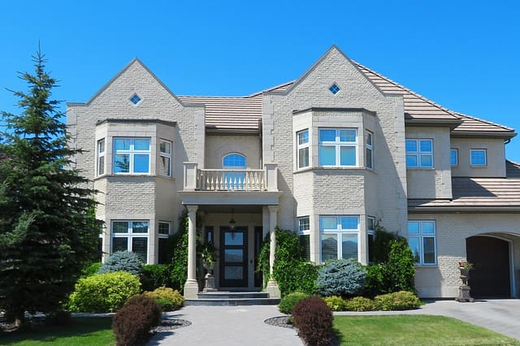

Residential Locksmith Services
Enhance your home security with expert lock installations, rekeying, and lockout aid.

Overview of Residential Lock & Security Solutions
Our residential locksmith division is dedicated to safeguarding your home, family, and personal belongings. Whether you have accidentally locked yourself out, moved into a newly purchased house that requires an immediate lock rekey, or want to upgrade your doors with pick-resistant deadbolts and smart keyless entry pads, our team provides meticulous, professional service.
Detailed Breakdown of Our Residential Offerings:
- Home Lockout Assistance: Locked out of your house? Our mobile technicians use specialized bypass tools to open doors safely without scratching wood or damaging the door frame.
- Lock Rekeying Services: If previous tenants, contractors, or former owners hold copies of your keys, you do not necessarily need expensive new hardware. We can rekey your existing lock cylinders to operate on a brand-new set of keys instantly.
- Grade 1 Deadbolt Installations: Reinforce your exterior entry points with heavy-duty steel deadbolts designed to withstand physical force, drilling, and lock bumping attacks.
- Smart Electronic Locks: Embrace modern convenience with keyless entry pads, Bluetooth deadbolts, and Wi-Fi enabled locks that allow you to monitor home access from your smartphone.
- Broken Key Extractions: If a key snaps inside your door lock cylinder, our technicians can safely extract the fragment without destroying the internal pins.
Frequently Asked Questions
Should I rekey or replace my locks when moving into a new home?
We strongly recommend rekeying or replacing all exterior locks immediately upon taking possession of a new home to ensure past owners, realtors, or contractors no longer possess functional keys.
Can all my house locks operate on a single key?
Yes! In most cases, we can key-alike all of your exterior entry doors so that a single key opens your front door, back door, and garage entry.